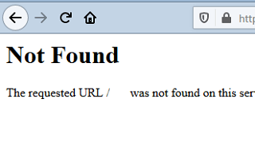
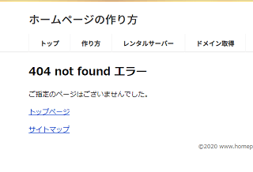
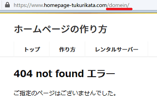
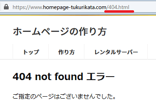
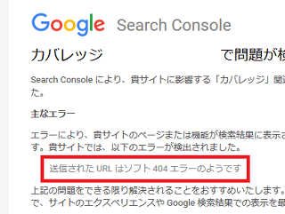
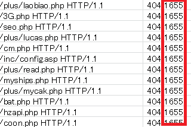
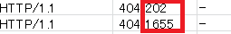
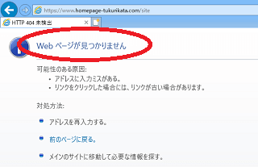
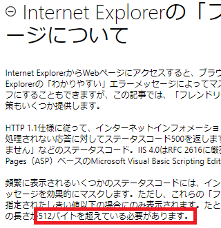

カスタム404ページの作り方
当サイトのデフォルトの「404 Not Found エラー」はこのようになっており、ファイルの存在しないページにアクセスされた場合にはこちらの画面が表示されます。

これでは英語での表示で不親切なため、当サイトでは404ページをカスタマイズしてこのように作成しています。

このカスタム404ページには「ページは見つかりませんでした」などの表示をしておき、サイトマップやトップページへのリンク、あるいは検索窓なども設定しておくと親切かと思います。
このカスタム404ページの作り方は簡単で、「404.html」や「error.html」などのページを作成したのち「.htaccess」に以下のように記述します。
ErrorDocument 404 /404.html
具体的な書き方については、ApacheのErrorDocumentディレクティブの箇所を参照されるとよいでしょう。
上記Apacheのページの例では「cgi-bin」のフォルダ内にファイルを設置していますが、こちらはCGIプログラム用のフォルダになるため、「404.html」はできるだけルートディレクトリなどに設置しておくことをおすすめします。
また、記述する際は「http://www.example.com/404.html」のような絶対パスのURLではなく、「/404.html」のような相対URLで記述するようにしましょう。
ErrorDocument 404 /404.html → ＯＫ
ErrorDocument 404 http://www.example.com/404.html → ソフト404
絶対URLで指定するとソフト404エラーになってしまうため、相対URLで作成することをおすすめします。
ソフト404エラーとは何か？
上記のようにErrorDocumentを絶対パスのURLにて記載すると、サーバーはエラーコードの「404」ではなく、「200」を送信してしまうため、ソフト404エラーと呼ばれる状態になってしまいます。
例えば、ブラウザで「domain」を「domein」と打ち間違えてしまい、当サイトの存在しないページにアクセスしてしまったとします。
この場合、相対パスで正常に「404」のエラーコードが返っていれば、誤ったURLのままでそのまま表示されます。
■相対パスの場合「404」
ErrorDocument 404 /404.html

このように相対パスで記載している場合、誤ったURLのままで正常に「404」が返りますが、これが正しいエラーになります。
■絶対パスの場合「200」（※ソフト404エラー）
ErrorDocument 404 http://www.example.com/404.html

一方、絶対パスで記載している場合、「domein」と打ち間違えると「404.html」へとリダイレクトされてしまい、「404.html」が「200」で正常に送信されます。そのため、エラーコードの「404」ではなく、正常に送信されたという意味の「200」が返ってくることになります。
これが「ソフト404エラー」になりますが、こちらは完全に誤っているとはいえないものの、「404」が返らないという点では不十分です。
ソフト404でも表示されるページ自体は同じなため、サイト訪問者にとっては特に何も変わりはありませんが、検索エンジンのクローラーには「200」が返ってしまうため、混乱させてしまうかもしれません。
Search Consoleにて「送信された URL はソフト 404 エラーのようです」と通知が来ることがありますが、おそらくは上記のように正常に「404」が返っていないものと思われます。

このような場合、ErrorDocumentの箇所を絶対パスで記載していないかをチェックしてみるとよいでしょう。
404エラーページのファイル容量を削減
この404エラーのページにはWebクローラーによるアクセスも多く、他のページと比較するとアクセスされる回数は多いです。当サイトでもセキュリティーの脆弱性を探るようなクロールが多発しており、そのような存在しないページへのアクセスは全て404が返りますが、回数自体が膨大なため転送量も多くなる傾向にあります。

そのため、このカスタム404ページをファイルサイズの大きなHTMLで作成してしまうと、短時間のうちに集中的なアクセスがあった際にサーバーに負担がかかってしまうかもしれません。できるだけ軽めのサイズでシンプルに作成しておくことをおすすめします。
例えば、当サイトのアクセスログで上記の「デフォルト404ページ」と「カスタム404ページ」を比較するとファイルの転送量に違いがあります。

デフォルトの場合は転送量がほんの「202」バイトであるのに対し、カスタム404ページの場合は「1655」バイトとなっており、デフォルトの方が軽めになっています。
これはカスタマイズした404ページにはアクセス解析のタグなども設置しており、ファイルサイズが大きくなっているためですが、できるだけテキストやHTMLタグなどを減らしてシンプルに作成することをおすすめします。
一方で、あまりにファイルサイズが小さくても、IEのブラウザでは「フレンドリー・エラーメッセージ」が表示されてしまうため、自分で作成したカスタム404ページが表示されない可能性があります。概ね、エラーページは513バイト～2000バイト程度で作成しておくとよいでしょう。
IEの「フレンドリー・エラーメッセージ」とは？
IEのブラウザには「フレンドリー・エラーメッセージ」のシステムがあり、単に「Not Found」などのメッセージが表示される場合、ブラウザが代わりに親切なメッセージを返してくれます。
例えば、「Firefoxのブラウザ」でアクセスした際、デフォルトでサーバーが返す404エラーがこちらだったとします。
この場合、英語なのでよく意味が分からず、どちらかというと不親切なメッセージといえます。
この点、「IEのブラウザ」にはフレンドリー・エラーメッセージの機能があるため、サーバーが返す上記のメッセージの代わりに、ブラウザ側でこのような親切なメッセージを自動で表示してくれます。

そのため、自分で404エラーのページをカスタマイズして作成していても、文字数が少ない場合は表示されないかもしれません。
この「フレンドリー・エラーメッセージ」について、Microsoftのサポートページには以下のような記述があります。
「ただし、これらのフレンドリ・エラーメッセージは、クライアントに送信される応答が指定されたしきい値以下の場合にのみ表示されます。たとえば、HTTP 500応答の正確なテキストを表示するには、コンテンツの長さが512バイトを超えている必要があります。」

こちらには404応答のしきい値についての記載はありませんが、当サイト運営者が実際に確認したところ、511バイトや512バイトではフレンドリー・エラーメッセージが表示されるのに対し、513バイトからはカスタム404ページが表示されました。
そのため、自分が作成したカスタム404ページをIEでも表示させるには、513バイト以上で作成することをおすすめします。
ただし、IEのブラウザのみですし、フレンドリー・エラーメッセージでも上記のように親切なページが表示されますので、あまり気にする必要はないかと思います。